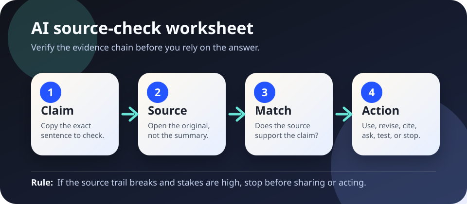

Verification worksheet
AI source-check worksheet.
Use this when an AI answer gives a citation, quote, statistic, policy claim, or confident summary that someone might repeat, publish, buy from, grade with, or act on.
The short answer
Do not verify the polish. Verify the claim. A fluent answer can still have a broken source trail: the source may not exist, may not say the quoted words, may be outdated, or may support a narrower claim than the AI wrote.
This worksheet turns an AI answer into a checkable chain: exact claim → original source → match quality → safe next action. That is consistent with NIST’s emphasis on AI validity, reliability, transparency, accountability, and risk management, and with SIFT-style verification habits: stop, investigate the source, find better coverage, and trace claims back to their original context.

Printable worksheet
Print this page or copy the boxes into a document. One worksheet is for one important claim, not an entire AI answer.
1. Exact claim
Copy the sentence you might rely on. Remove vague words until it can be checked.
Claim:
Type: citation / quote / number / policy / summary / other
2. Original source
Find the primary source when possible: official page, paper, transcript, dataset, law, policy, manual, or direct measurement.
Source title and URL:
Date/version checked:
3. Match quality
Does the source directly support the claim, partly support it, contradict it, or not mention it?
Exact supporting words or data:
Missing limits: population, setting, date, method, exception, jurisdiction, uncertainty.
4. Safe action
Choose the safest next step before sharing or relying on the answer.
Use / revise / cite source instead / ask expert / run test / stop
Reason:
If the AI gives a citation
- Open the source. Do not trust a title, journal name, case name, or agency report until it resolves to a real source.
- Check that the source is the right kind. A blog post, marketing page, preprint, statute, peer-reviewed article, and official guidance carry different weight.
- Search inside the source. Look for the named term, number, quote, table, section, or page. If you cannot find it, mark the AI claim unsupported.
- Check date and scope. A source may be real but outdated, from another jurisdiction, limited to a benchmark, or about a different population.
- Cite what you verified, not what the AI said. Your final statement should point to the source you actually checked.
If the AI gives a quote
- Find the quote in the original document, transcript, recording, or official publication.
- Compare punctuation and wording. Small changes can reverse meaning when negation, uncertainty, or conditions are removed.
- Read the paragraph before and after the quote. A quote can be accurate and still misleading without context.
- If you cannot locate the quote, do not publish it as a quote. Paraphrase only what a checked source supports, or stop.
If the AI gives a number
- Write the calculation or source table that produced the number.
- Check units, timeframe, denominator, rounding, currency, population, and whether “average,” “median,” and “percentage point” are being used correctly.
- For important decisions, reproduce the arithmetic outside the AI system.
- If the number affects money, health, public policy, rights, safety, or reputation, get stronger review before acting.
Stop rules
Stop instead of sharing when the source trail breaks and the claim could affect someone’s rights, health, job, education, finances, safety, legal position, reputation, or access to public services.
For health contexts, WHO guidance on AI ethics emphasizes human autonomy, safety, transparency, accountability, inclusiveness, equity, and public interest. A chatbot answer with an unchecked source trail does not meet that bar.
Sources and further reading
- NIST — AI Risk Management Framework
- World Health Organization — Ethics and governance of artificial intelligence for health
- Mike Caulfield — SIFT: The Four Moves
This worksheet is educational, not legal, medical, financial, or safety advice. For high-stakes decisions, use qualified review and documented source checks.